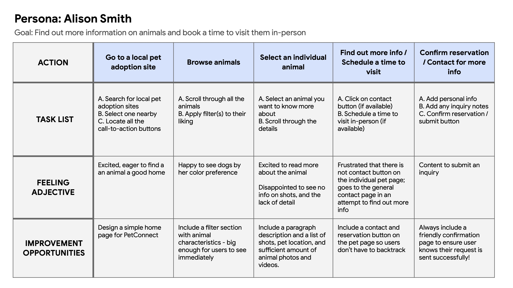
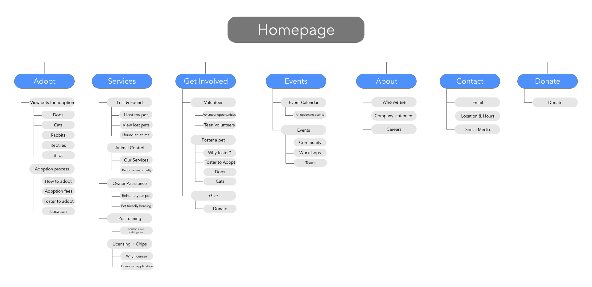
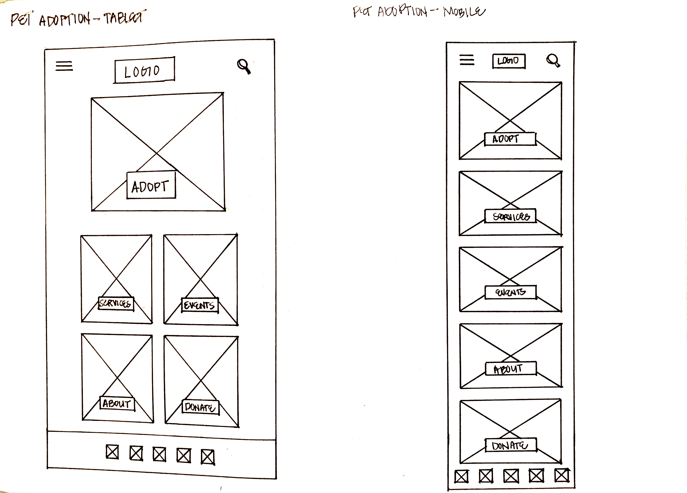
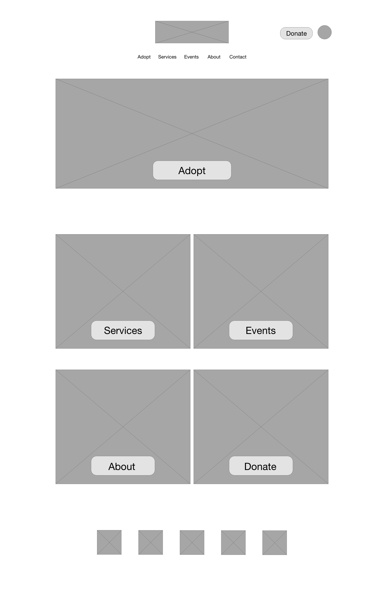
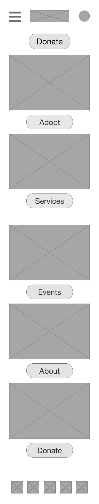
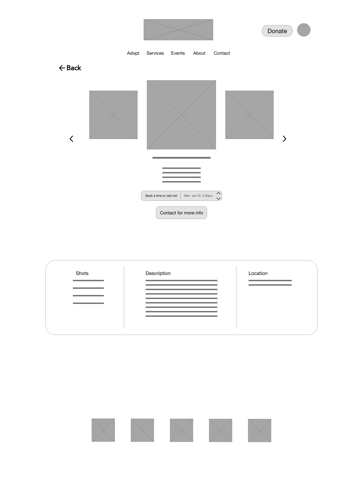

Case Study:
PETCONNECT
A pet adoption app
Project Overview
The problem
Not all animals are readily available for users to visit casually. Websites also don’t have enough information on pets that are available on shop websites.
The goal
PetConnect’s website aims to include booking capabilities so users can plan a visit ahead of time. The website will also include as much content, information and media online about the animals that are available.
The product
PetConnect is an online scheduling system that allows users to book a time to visit animals ahead of time, while having core shop information. The typical user is between 25-40 years old and include professionals who have busy schedules. PetConnect’s goal is to make it convenient and efficient for users to plan a visit in advance.
My role
UX Designer leading the website and app design
Responsibilities
Conducting user interviews and testing, drafting up paper and digital wireframes and turning them into high-fidelity mockups. Iterating on designs based on continued user testing.
Project duration
December 2021 - February 2022
Understanding the user
I conducted user interviews and turned them into empathy maps to better understand the user and their needs. I discovered that many users are eager to look for a pet to adopt, but find that websites lack information, pet information and media, and scheduling capabilities, which frustrate users and their experience. While this does not stop them from finding a pet that needs a home, it doesn’t help them on their journey.
User pain points
1. Navigation
Pet adoption sites are often cluttered, unorganized and difficult to navigate, causing frustration.
2. Lack of Content
Users find sites don’t update the animals that are available, are lacking media and info on animals, or are not shown at all on websites, causing frustration in the lack of content.
3. Interaction
Websites contain buttons and forms that are too small or don't function well.
Persona & Problem statement
Alison Smith is a web developer at a tech company who needs to browse pets available for adoption and plan visits ahead of time because she wants to see what animals available before viewing them in person.
User journey map
I created a user journey map on Alison to locate any pain points, areas of interest, and improvement opportunities.
Responsive Design
Sitemap
A cluttered landing page seemed to distract the user from browsing animals. I created a hierarchical structure so the home page had essential information only that then branched out to child sub-topics.
My goal was to provide as much useful information as possible in an organized manner, so the user could get the best knowledge of the company and the pet
Starting the design
Paper wireframes
I sketched paper wireframes keeping a simple navigation and a clean landing page in mind. I tried to keep anything that wasn’t a parent category off the homepage.

Paper wireframe screen size variation
Then, I sketched out a responsive design for mobile users. Because of the limited space, the buttons, images, and text are kept even simpler. I included a hamburger menu for navigation.
Digital wireframe screen size variations
I started drafting the wireframes for the desktop version first, and used the sitemap to organize the information. After that was complete, I drafted the mobile wireframes and thought of new ways to place information in a more compressed space. I prioritized big, easy-to-see buttons for both the desktop and mobile version.
Desktop Home Page
Mobile Home Page
Desktop Pet Info Page
Mobile Pet Info Page

Prototype
In preparation for the usability study, I drafted up a prototype for the website mockups
Usability Study Findings
An unmoderated usability study was conducted with 5 participants to gain insight on what iterations need to be made moving forward.
1. Schedule reservation button
Users viewing details on a particular animal did not know how to change the date and time
2. Confirmation Page
Once users submitted a reservation or inquiry, they were confused to find no additional confirmation screen acknowledging their request
3. Account
The top account icons were not used and users didn’t understand why an account icon was needed
Refining the design
Mockups
Schedule visitation page: I added an improved “Book time” button that leads to a calendar page with a time drop-down menu and finally a reservation confirmation page.
Laptop mockups (original size)
Mobile mockups (size variations)
High-fidelity prototype
Laptop high-fidelity prototype
View laptop high-fidelity prototype here
Accessibility considerations
Visual Hierarchy
Headings with different size text for visual hierarchy
High-contrast colors
High-contrast colors between text and background colors so they are easily readable
Buttons
Large call-to-action buttons spaced away from each other for users to easily activate them
Going forward
Takeaways
Impact
Users liked that the website had essential pet information and media. They especially liked the option to select a time to schedule an animal visit ahead of time.
What I learned
I learned to think beyond what websites currently have, and design with potential improvements. A simple feature like adding a scheduler, confirmation page and all essential content in an organized manner can positively increase a user’s experience.